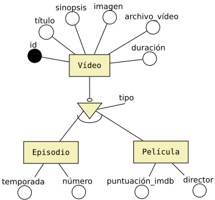
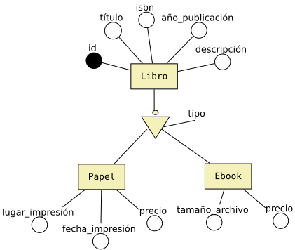

Modelo relacional
Del modelo conceptual al modelo relacional
Entidades (Fuertes y Débiles)
Cada una de las entidades (fuertes y débiles) del diagrama E/R genera una tabla, donde cada uno de los atributos de la entidad pasa a ser una columna de la tabla.
Ejemplo:
En este ejemplo las entidades fuertes Alumno y Examen Teórico generan una tabla en el modelo relacional con las siguientes columnas.
- ALUMNO(id, nombre, apellido1, apellido2, nif, grupo)
- EXAMEN_TEÓRICO(id, título, número_preguntas, fecha)
Relaciones con cardinalidad 1:1
Como norma general, las relaciones con cardinalidad 1:1 no generan una tabla, lo que haremos será que la clave primaria de una entidad pasará a formar parte de la tabla de la otra entidad, y pasará como un atributo.
La participación de cada una de las entidades será lo que nos ayude a decidir cuál será la entidad que pasará su clave primaria a la otra entidad.
Excepción: Sólo existe un caso donde una relación con cardinalidad 1:1 genera una nueva tabla, y será cuando la participación de las dos entidades sea de tipo (0,1)..(0..1).
Veamos los casos que pueden existir.
Participación (1,1)..(0,1)

Como la participación de Usuario es de (1,1) y la de Canal YouTube es de (0,1), la clave primaria de Usuario se almacena en la tabla de Canal YouTube como un atributo. Se dice que el atributo id_usuario que se añade en la tabla Canal_YouTube es una clave ajena o foreign key (FK) de la tabla Usuario.
Las tablas del modelo relacional quedarían así:
- USUARIO(id, email, password, nombre, apellido1, apellido2)
-
CANAL_YOUTUBE(id, nombre, descripción,
fecha_creación, id_usuario)
- id_usuario: FOREIGN KEY de USUARIO(id)
Participación (1,1)..(1,1)
En este caso, como la participación de las dos entidades es de (1,1) podemos resolverlo de tres formas.
- La clave primaria de Presidente se almacena en la tabla País como un atributo (id_presidente). Se dice que id_presidente es una clave ajena o foreign key (FK) de la tabla Presidente.
- PRESIDENTE(id, nombre, apellido1, apellido2)
-
PAÍS(id, nombre,
id_presidente)
- id_presidente: FOREIGN KEY de PRESIDENTE(id)
- La clave primaria de País se almacena en la tabla Presidente como un atributo (id_pais). Se dice que id_pais es una clave ajena o foreign key (FK) de la tabla País.
- PAÍS(id, nombre)
-
PRESIDENTE(id, nombre, apellido1, apellido2,
id_país)
- id_país: FOREIGN KEY de PAÍS(id)
- Las claves primarias de ambas entidades se guardan en la tabla de la otra entidad. Es decir, la tabla Presidente guardaría la clave primaria de País y la tabla País guardaría también la clave primaria de Presidente. Esta solución puede presentar redundancia, pero puede ser interesante en algunas ocasiones, dependiendo de las consultas que se vayan a realizar sobre estas tablas a nivel de aplicación. En este caso los atributos id_país y id_presidente serían claves_ajenas o foreign key (FK).
-
PRESIDENTE(id, nombre, apellido1, apellido2,
id_país)
- id_país: FOREIGN KEY de PAÍS(id)
-
PAÍS(id, nombre,
id_presidente)
- id_presidente: FOREIGN KEY de PRESIDENTE(id)
Participación (0,1)..(0,1)
Cuando la participación de las dos entidades es de (0,1), se puede crear una nueva tabla donde se almacenan las claves primarias de las dos entidades que participan en la relación. La clave primaria de la nueva tabla será una de las dos claves ajenas que se reciben.
En este ejemplo tendríamos:
- ALQUILER(id, fecha_inicio, fecha_fin, importe, fianza)
-
ALQUILER_RENUEVA_ALQUILER(id_alquiler, id_alquiler_anterior)
- id_alquiler: FOREIGN KEY de ALQUILER(id)
- id_alquiler_anterior: FOREIGN KEY de ALQUILER(id)
Relaciones con cardinalidad 1:N
Las relaciones con cardinalidad 1:N no generan una tabla, lo que haremos será que la clave primaria de la entidad que participa con cardinalidad 1 pasará a formar parte de la tabla de entidad que participa con cardinalidad N, y además pasará como un atributo.
Ejemplo:
En este caso la clave primaria de la entidad que participa en la relación con cardinalidad 1 se guarda en la tabla de la entidad que participa con cardinalidad N.
- USUSARIO(id, email, password, nombre, apellido1, apellido2)
-
VÍDEO(id, nombre, descripción, duración,
id_usuario)
- id_usuario: FOREIGN KEY de USUARIO(id)
Relaciones reflexivas con cardinalidad 1:N
En este caso la clave primaria se almacena en la misma tabla como atributo.
La tabla Empleado vuelve a guardar su clave primaria como atributo haciendo referencia al id del jefe, le llamaremos id_jefe.
-
EMPLEADO(id, nombre, apellido1, apellido2,
id_jefe)
- id_jefe: FOREIGN KEY de EMPLEADO(id)
Relaciones con cardinalidad N:N
Las relaciones con cardinalidad N:N son las únicas que van a generar una nueva tabla.
Ejemplo:
En este caso se crea una nueva tabla donde se almacenan las claves primarias de las dos entidades que participan en la relación. Las claves primarias de las entidades también serán claves primarias de la nueva tabla. Si la relación contiene algún atributo, se deberán añadir a la nueva tabla.
- ALUMNO(id, nombre, apellido1, apellido2, nif, grupo)
- EXAMEN_TEÓRICO(id, título, número_preguntas, fecha)
-
ALUMNO_HACE_EXAMEN_TEÓRICO(id_alumno, id_examen, nota)
- id_alumno: FOREIGN KEY de ALUMNO(id)
- id_examen: FOREIGN KEY de EXAMEN(id)
NOTA: Habrá casos donde los atributos de la relación también formarán parte de la clave primaria de la nueva tabla. Estos casos aparecerán cuando en la relación existan atributos de tipo fecha y sea necesario almacenar un histórico de las relaciones entre las dos entidades en función de las fechas. Estos casos también pueden resolverse añadiendo un nuevo identificador de tipo entero con autoincremento en lugar de utilizar una clave primaria compuesta por varias columnas.
Ejemplo:
Las reglas de transformación de E/R al modelo relacional nos dicen que la relación Suministra genera una nueva tabla porque es una relación de cardinalidad N:N. Esta nueva tabla recibe las claves primarias de las dos entidades que participan en la relación y además participan como clave primaria. La solución teórica sería la siguiente:
- PROVEEDOR(id, dirección, ciudad, provincia)
- PIEZA(id, nombre, color, precio)
-
PROVEEDOR_SUMINISTRA_PIEZA(id_proveedor, id_pieza, fecha, cantidad)
- id_proveedor: FOREIGN KEY de PROVEEDOR(id)
- id_pieza: FOREIGN KEY de PIEZA(id)
Con esta solución podemos tener un problema en el caso de que un proveedor nos suministre piezas con el mismo id en fechas diferentes. En este caso no podríamos almacenar esta información en la tabla porque se produciría un error de claves primarias duplicadas.
| #id_proveedor | #id_pieza | fecha | cantidad |
|---|---|---|---|
| 1 | 1 | 01/01/2018 | 100 |
| 1 | 1 | 20/01/2018 | 100 |
Para solucionarlo podemos incluir el atributo fecha como parte de la clave primaria de la tabla, de modo que la clave primaria estaría compuesta por id_proveedor, id_pieza y fecha. La solución sería la siguiente:
-
PROVEEDOR_SUMINISTRA_PIEZA(id_proveedor, id_pieza
, fecha, cantidad)
- id_proveedor: FOREIGN KEY de PROVEEDOR(id)
- id_pieza: FOREIGN KEY de PIEZA(id)
En este caso ya no habría ningún problema para almacenar que un proveedor nos suministra piezas con el mismo id en fechas diferentes.
| #id_proveedor | #id_pieza | #fecha | cantidad |
|---|---|---|---|
| 1 | 1 | 01/01/2018 | 100 |
| 1 | 1 | 20/01/2018 | 100 |
Si fuese necesario registrar que el mismo proveedor puede suministrar piezas con el mismo código en diferentes horas del mismo día, habría que reemplazar la columna fecha por fecha_hora.
| #id_proveedor | #id_pieza | #fecha_hora | cantidad |
|---|---|---|---|
| 1 | 1 | 01/01/2018 08:00:00 | 100 |
| 1 | 1 | 20/01/2018 10:00:00 | 100 |
| 1 | 1 | 20/01/2018 17:00:00 | 100 |
Otra forma de resolver este problema puede ser creando un nuevo atributo id que sea un valor numérico con autoincremento y que éste sea la única clave primara de la tabla. La solución sería la siguiente:
-
PROVEEDOR_SUMINISTRA_PIEZA(id,
id_proveedor, id_pieza, fecha_hora,
cantidad)
- id_proveedor: FOREIGN KEY de PROVEEDOR(id)
- id_pieza: FOREIGN KEY de PIEZA(id)
En este caso tampoco habría ningún problema para almacenar que un proveedor nos suministra piezas con el mismo id en fechas diferentes.
| #id | id_proveedor | id_pieza | fecha_hora | cantidad |
|---|---|---|---|---|
| 1 | 1 | 1 | 1/01/2018 08:00:00 | 100 |
| 2 | 1 | 1 | 20/01/2018 10:00:00 | 100 |
| 3 | 1 | 1 | 20/01/2018 17:00:00 | 100 |
Relaciones reflexivas con cardinalidad N:N
En este caso tendremos dos tablas en el modelo relacional:
- VÍDEO(id, título, descripción, reproducciones)
-
VÍDEOS_RELACIONADOS(id_video
>, strong>id_video_relacionado
>)
- id_video: FOREIGN KEY de VÍDEO(id)
- id_video_relacionado: FOREIGN KEY de VÍDEO(id)
Relaciones grado 3
Siempre que sea posible se recomienda convertir las relaciones de grado 3 en dos relaciones de grado 2.
Las relaciones de grado 3 pueden generar una nueva tabla dependiendo de la cardinalidad de la relación.
Cardinalidad N:N:N
En este caso creamos una tabla. La clave primaria de la nueva tabla estará formada por las tres claves de las entidades que participan en la relación.

Cardinalidad 1:N:N
En este caso creamos una tabla. La clave primaria de la nueva tabla estará formada por las dos claves de las entidades que participan como N en la relación.
Cardinalidad 1:1:N
En este caso no es necesario crear una tabla. La entidad que participa como N recibe las claves de las dos entidades que participan como 1.
Generalización y Especialización (Relaciones ISA)
Existen varias soluciones para realizar el el paso a tablas de una especialización. La solución que se elija en cada caso dependerá del tipo de especialización que estemos resolviendo: total, parcial, inclusiva o exclusiva.
Las 3 soluciones posibles que podemos aplicar son las siguientes:
-
Crear una única tabla para la superclase. En este caso todos los atributos de las subclases se guardarían en la superclase.
-
Crear una tabla sólo para las subclases. En este caso los atributos de la superclase habría que guardarlos en cada una de las subclases.
-
Crear una tabla para cada una de las entidades, tanto para la superclase como las subclases. En este caso las subclases tendrían que guardar la clave de la primaria de la superclase.
Ejemplo de especialización exclusiva/total
En este caso sería adecuado utilizar la solución 2 o 3. También
sería posible utilizar la solución 1, pero al tratarse de una
especialización exlusiva, tendríamos muchas columnas con valores
NULL.

Solución 2: Crear una tabla sólo para las subclases.
-
EPISODIO(id, título, sinopsis, imagen, archivo_vídeo, duración temporada, número)
-
PELÍCULA(id, título, sinopsis, imagen, archivo_vídeo, duración puntuación_imdb, director)
Solución 3: Crear una tabla para cada una de las entidades.
-
VÍDEO(id, título, sinopsis, imagen, archivo_vídeo, duración, tipo)
-
EPISODIO(id, temporada, número)
- id: FK de VÍDEO(id)
-
PELÍCULA(id, puntuación_imdb, director)
- id: FK de VÍDEO(id)
Ejemplo de especialización inclusiva/total
En este caso podríamos utilizar cualquiera de las tres soluciones, dependerá del contexto del ejercicio y de cómo se relacionen estas entidades con el resto de entidades del diagrama.

Solución 1. Crear una única tabla para la superclase.
- LIBRO(id, título, isbn, año_publicación, descripción, tipo, lugar_impresión, fecha_impresión, precio_papel, tamaño_archivo, precio_ebook)
Solución 2: Crear una tabla sólo para las subclases.
-
LIBRO_PAPEL(id, título, isbn, año_publicación, descripción, lugar_impresión, fecha_impresión, precio)
-
LIBRO_EBOOK(id, título, isbn, año_publicación, descripción, tamaño_archivo, precio)
Solución 3: Crear una tabla para cada una de las entidades.
-
LIBRO(id, título, isbn, año_publicación, descripción, tipo)
-
LIBRO_PAPEL(id, fecha_impresión, precio)
- id: FK de LIBRO(id)
-
LIBRO_EBOOK(id, tamaño_archivo, precio)
- id: FK de LIBRO(id)